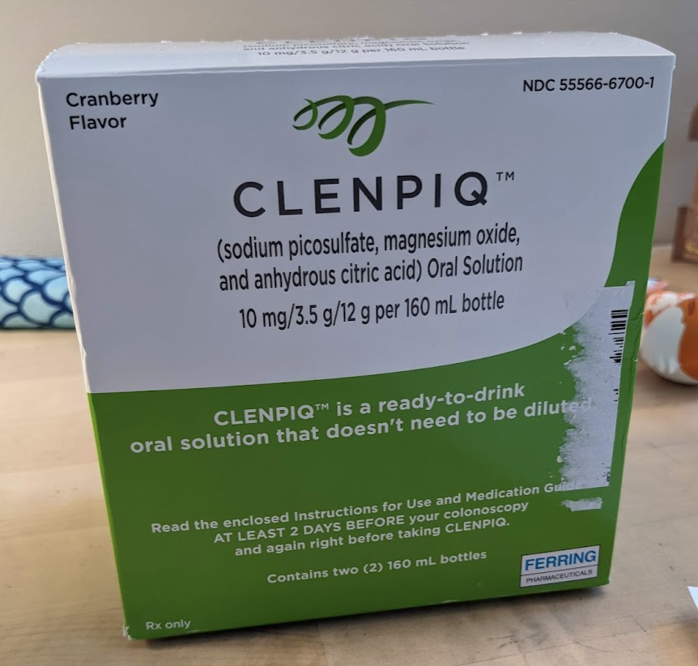
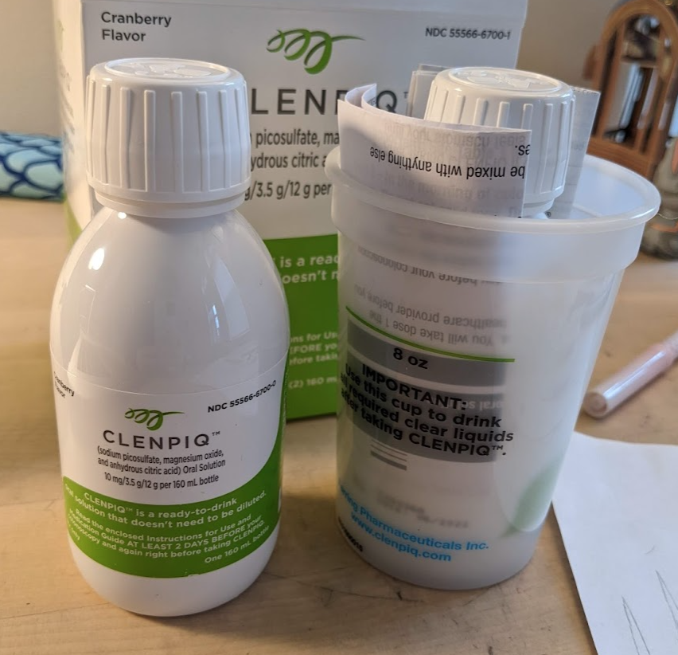

1 はじめに
アメリカでは50歳以降数年に一回大腸内視鏡検査(Colonoscopy)を受けることが推奨されていて、私のホームドクターからも受けておくように言われました。10月ごろに予約の電話をしたのですが、取れたのは2月中盤です。
2 検査10日前
Colonoscopyの予約確認メールが2週間ほど前に来たので、重い腰を上げて準備を始めることにしました。
まずはかかりつけ薬局のCVSに行って、強力な下剤を入手しました。自費で購入するのかと思っていたら、処方箋が既にCVSに行っていて、無料で入手できました。この薬は100ドルくらいするらしいのですが、後で請求が来ないことを祈ります。
予め、Colonoscopyは自費負担ゼロで受けられることを保険会社に確認してありますが、想定外の請求が来るのがアメリカです。去年の健康診断でも、ドクターとのリモート面談が二人で$300、血液検査が二人で$460請求されました。定期健康診断は自己負担が無いのでは、と保険会社に問い合わせしましたが、面談分はカバーされないと言われました。
血液検査の方は最終的に保険会社が支払いましたが、それまでに何度か問い合わせし、その度に1ヶ月も内部調査をしてトータルで3ヶ月かかりました。
3 検査3日前
検査3日前から消化の良い食事(low residual diet)を始めます。ナッツ類、フルーツや生野菜、全粒粉パンがだめなんですね。いつもスナックに食べているナッツは控えましたが、生野菜やワカメを食べてしまいました。日本では前日しか準備しないようなので、あまり神経質になるのはやめました。
4 検査1日前
検査前日は朝から飲み物のみのプチ断食(clear liquid diet)が始まります。お茶やコーヒーはいい(ミルクは駄目)ので、普段は入れない砂糖を入れて飲みました。コンソメスープを小さな鍋いっぱい作って、お腹が空いたら食事の代わりに飲みます。固形コンソメをお湯に溶かすとインスタントコンソメスープになるんですね。具無しの澄んだスープでも意外と空腹が満たされるものです。
夜8時(指定は7時ですが)になったら、最初の下剤ボトルを飲み、その後2時間以内に1.2リットルほど水を飲まなくてはなりません。昔は4リットルも下剤を溶かした水(まずいらしい)を飲む必要があったようですが、ずいぶん楽になりました。

家族が気を利かせて(?)、日本から持ち込んだ大塚製薬のOS-1を2リットル分出してきて、これを飲んだのですが、まずくてきつかったです。本当は1.5リットル(40オンス)でいいのですが。
処方薬の下剤は流石に強力でした。1時間半ほどしてトイレに駆け込み、全て出た気になりました。しかし薬は効いたままで、夜中に3度目を覚ましてトイレに行きました。朝起きたら体が重い感じがしました。
5 検査当日
起床後、まずは胃の保護のためにコンソメスープを飲み、続けて紅茶とコーヒーを飲みました。
検査6時間前の7:30に、再度下剤を飲みました。比較的小さなボトルなのですが、まずくて飲むのに1分くらいかかります。その後OS-1を1.5リットル飲んでいる間にトイレに行きたくなりました。出るのは水分だけです。拭きすぎてお尻がヒリヒリします。baby wipeを用意しておけばよかったです。

そして、残りのOS-1 0.5リットルを飲みました。検査4時間前の9:30からは飲み物も一切絶ちます。ノルマのOS-1を飲みきったら、気分的にだいぶ楽になりました。残りは本番です。1時間前に病院に行きます。
6 検査
病院には徒歩と電車で行きます、全て歩いても20分くらいなのですが、付添の家族が嫌がるので往復電車を使いました。多少ふらつきますが、病人じゃないので普通に歩けます。
着ているものはすべて脱ぎ、ガウンと割烹着の組み合わさったような、後ろ側が合いている服に着替えます。看護師さんが右腕の血管に針を入れます。ここからリラックスさせる薬を入れるとのこと。更に鼻のところに何らかのガス(酸素?)が出るものを付けます。準備している間にいろいろと説明があり、最後にサインをします。
その状態で自分の名前や生年月日を言わされ、しばらくすると意識は半分あるのですが、何をされているのかわからない感じになりあす。再度意識が少しはっきりしたところで、終わりましたと言われました。夢のような、なにか少し痛かったような気もしましたが、大腸内視鏡検査をされている実感は特になく、気がついたら終わっていました。話しかけられたことには普通に応対できます。
7 結果
結果は特に何も見つからなかったようで、次回は10年後でよいと言われました。 帰りにハンバーガーでも食べたかったのですが、胃がびっくりすると困るので、家に帰ってからインスタントポタージュスープを飲んでこんにゃくゼリーを食べ、がっつりと夕食を食べる準備をしましました。
8 終わりに
検査自体は拍子抜けするほど簡単に終わりましたが、いろいろと準備が面倒なので、毎年やるのは嫌ですね。次回が10年後でよかったです。